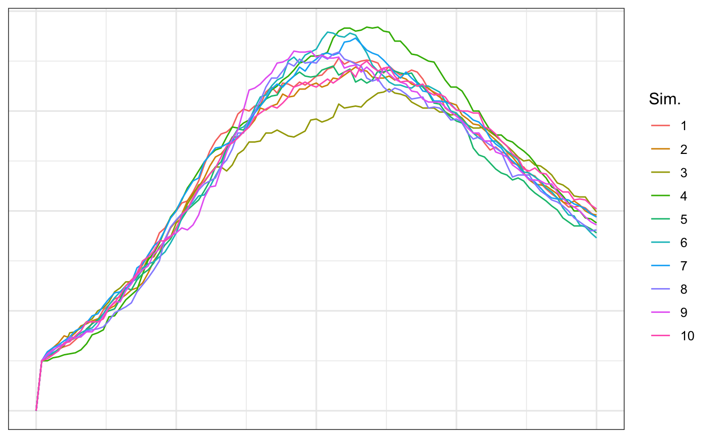

In this vignette, we explore agent-based models with EpiCompare. Specifically, we
Define an agent-based model (ABM).
Briefly explain the relationship between ABMs and aggregate models.
Demonstrate how EpiCompare can be used to create and visualize basic agent-based models.
There are numerous sophisticated software to create stochastic aggregate models (e.g. (???) or (Jenness, Goodreau, and Morris 2018)). Over the past decade, the number of ABMs has also increased (e.g. FRED, VBI). In our experience, ABMs are less accessible to the typical scientist because of privacy concerns or computational concerns.
One thing we can do with ABMs is to mimic an aggregate model. While a compartment model would only look at group-level information with respect to an epidemic (e.g. the number of susceptible, infectious, and recovered at each time step), an agent-based model would allow us to track any and all agents over time.
EpiCompare creates stochastic ABMs that are based on the ODEs used to describe transitions among epidemic states. Note that the functions in EpiCompare are based on discrete time-steps or difference equations as opposed to ODEs.
Recall that a SIR model without birth and death in a population of size \(N\) and initial population \((S(0), I(0), R(0))\) is given by the following set of equations:
\[ \frac{dS}{dt} = -\beta \frac{SI}{N} \]
\[ \frac{dI}{dt} = \beta \frac{SI}{N} - \gamma I \]
\[ \frac{dR}{dt} = \gamma I. \]
We could instead use a transition matrix (cite) to describe the non-negative number of individuals moving from state \(i\) to state \(j\) (either the instantaneous rate of change or the difference from one time step to the next).
For example, the SIR ODEs describe \(K=3\) states and so our transition matrix is
\[ D = \left (\begin{array}{ccc} S\left (1 - \beta \frac{I}{N} \right ) & S\beta \frac{I}{N} & 0\\ 0 & I(1 - \gamma) & I\gamma\\ 0 & 0 & R \end{array} \right ), \] where entry (1,2) corresponds to the movement of individuals in state S to state I.
Once we have \(D\), we can create a stochastic analog of the model by deriving a transition probability matrix \(P\) where entry \(P_{ij} = \frac{D_{ij} }{\sum_{k=1}^K D_{ik}}\) is the normalized probability of moving from the current state (the row) to the next state (the column).
The stochastic updates in the ABM are then given through Multinomial draws conditioned on an agent’s current state at time \(t\). For agent \(n\) currently in state \(i\), the agent’s next state is given by a Categorical draw which is dependent on the transition matrix \(D\), \[ A_n(t+1) |D(t) \sim \mathrm{Categorical} \left (1, P_i(t) \right ). \]
This procedure can be done simply with EpiCompare with the following code:
set.seed(2020) ## This is the SIR representation trans_mat <- matrix(c("X0 * (1 - X1 * par1 / N)", "X0 * X1 * par1 / N", "0", "0", "X1 * (1 - par2)", "par2 * X1", "0", "0", "X2"), byrow = TRUE, nrow = 3) rownames(trans_mat) <- c("S", "I", "R") init_vals <- c(950, 50, 0) par_vals <- c(par1 = .1, par2 = .03) max_T <- 100 n_sims <- 10 abm <- simulate_agents(trans_mat, init_vals, par_vals, max_T, n_sims, verbose = FALSE) head(abm) %>% kable() %>% kable_styling(position = "center")
| sim | agent_id | S | I | R |
|---|---|---|---|---|
| 1 | 1 | 1 | 42 | 52 |
| 1 | 2 | 1 | 30 | 77 |
| 1 | 3 | 1 | 31 | 65 |
| 1 | 4 | 1 | 60 | NA |
| 1 | 5 | 1 | NA | NA |
| 1 | 6 | 1 | 70 | NA |
The main difference in the output of simulate_agents and functions from EpiModel and pomp is that we can determine exactly when each agent moves from one state as opposed to the aggregate total in each state.
We can compare our ABM to aggregate models with agents_to_aggregate.
agg_model <- abm %>% dplyr::group_by(sim) %>% agents_to_aggregate(states = c(I, R)) head(agg_model) %>% kable() %>% kable_styling(position = "center")
| sim | t | X0 | X1 | X2 |
|---|---|---|---|---|
| 1 | 0 | 1000 | 0 | 0 |
| 1 | 1 | 950 | 50 | 0 |
| 1 | 2 | 945 | 54 | 1 |
| 1 | 3 | 941 | 57 | 2 |
| 1 | 4 | 936 | 62 | 2 |
| 1 | 5 | 932 | 64 | 4 |
ggplot(agg_model, aes(x = t, y = X1, group= sim, col = factor(sim))) + geom_line() + labs(x = "time", y = "Number of infectious", col = "Sim.")

The strength of simulate_agents is that it can simulate an outbreak for any valid input of \(D\).
In this model, a recovered individual does not acquire lifelong immunity. The ODEs we use are
\[ \frac{dS}{dt} = -\beta (t) \frac{SI}{N} + \eta R \]
\[ \frac{dI}{dt} = \beta (t) \frac{SI}{N} - \gamma I \]
\[ \frac{dR}{dt} = \gamma I - \eta R. \] where \(\beta(t) = b + sin(t)\), which allows for a cyclical infection rate.
## SIRS ## This is the SIRS representation trans_mat <- matrix(c("X0 * (1 - X1 * (par1 + sin(t)) / N)", "X0 * X1 * (par1 + sin(t)) / N", "0", "0", "X1 * (1 - par2)", "par2 * X1", "X2 * par3", "0", "X2 * (1 - par3)"), byrow = TRUE, nrow = 3) rownames(trans_mat) <- c("S", "I", "R") colnames(trans_mat) <- c("S", "I", "R") init_vals <- c(950, 50, 0) par_vals <- c(par1 = .5, par2 = .25, par3 = .05) max_T <- 100 n_sims <- 100 ## Print the transition matrix kable(trans_mat) %>% kable_styling(positio = "center")
| S | I | R | |
|---|---|---|---|
| S | X0 * (1 - X1 * (par1 + sin(t)) / N) | X0 * X1 * (par1 + sin(t)) / N | 0 |
| I | 0 | X1 * (1 - par2) | par2 * X1 |
| R | X2 * par3 | 0 | X2 * (1 - par3) |
## Warning: will take about a minute. Set `verbose = TRUE` to see progress set.seed(2020) abm <- simulate_agents(trans_mat, init_vals, par_vals, max_T, n_sims, verbose = FALSE, out_format = "long") head(abm) %>% kable() %>% kable_styling(position = "center")
| sim | agent_id | time | state | state_name |
|---|---|---|---|---|
| 1 | 1 | 1 | 0 | S |
| 1 | 1 | 4 | 1 | I |
| 1 | 1 | 6 | 2 | R |
| 1 | 1 | 16 | 0 | S |
| 1 | 1 | 85 | 1 | I |
| 1 | 1 | 88 | 2 | R |
In the above table, it is clear that the agent can become susceptible again.
Jenness, Samuel, Steven Goodreau, and Martina Morris. 2018. “EpiModel: An R Package for Mathematical Modeling of Infectious Disease over Networks.” Journal of Statistical Software, Articles 84 (8): 1–47. https://doi.org/10.18637/jss.v084.i08.